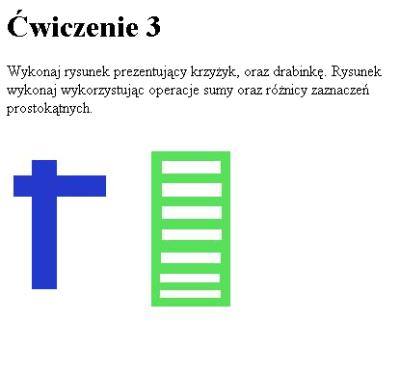

Narzêdzia selekcji obszaru
Narzêdzia selekcji obszaru s³u¿¹ do wskazania
fragmentu rysunku, na którym bêd¹ wykonywane operacje edytorskie.
Kopiowanie fragmentów, wype³nianie farb¹, malowanie pêdzlem,
rozmywanie, rzucanie cienia - te i wiele innych operacji
dotyczy wybranego fragmentu obrazu.
Umiejêtnoœæ zaznaczenia konkretnego obszaru rysunku
warunkuje efektywnoϾ naszej pracy z programem GIMP.
W poprzednim odcinku nauczyliœmy siê zaznaczaæ ca³y rysunek
(opcja: "Zaznaczenie -> Wszystko"). Operacj¹ odwrotn¹ jest usuniêcie
zaznaczenie: "Zaznaczenie -> Brak".
Skróty klawiszowe Ctrl-A oraz Ctrl-Shift-A s³u¿¹ do zaznaczenia ca³ego
rysunku oraz do usuniêcia zaznaczenia.
Zaznaczanie obszaru
Narzêdzia s³u¿¹ce do zaznaczania obszaru s¹ dostêpne
w oknie g³ównym programu GIMP. Jest to pierwsza seria przycisków,
s³u¿¹ca do wykonywania nastêpuj¹cych czynnoœci:
- zaznaczanie prostok¹tnych obszarów (klawisz skrótu: r)
- zaznaczanie eliptycznych obszarów (klawisz skrótu: e)
- odrêczne zaznaczanie obszarów (klawisz skrótu: f)
- zaznaczanie s¹siaduj¹cych obszarów (klawisz skrótu: z)
Powy¿sze opcje znajdziemy równie¿ w menu podrêcznym
rysunku. Na przyk³ad zaznaczenie prostok¹tne
uaktywnimy klikaj¹c: "Narzêdzia -> Zaznaczenie -> Zaznaczenie prostok¹tne",
zaœ zaznaczenie eliptyczne
"Narzêdzia -> Zaznaczenie -> Zaznaczenie eliptyczne". Warto zapamiêtaæ
skróty klawiszowe wymienione powy¿ej: r, e, f oraz z.
Æwiczenie 1
Przygotuj ilustracjê o wymiarach 256x256 przedstawiaj¹c¹
czerwony prostok¹t, zielony owal oraz
niebieski rysunek w kszta³cie liœcia.
Æwiczenie rozpoczynamy od utworzenia nowego, pustego
rysunku (opcja "Plik -> Nowy"). Nastêpnie wybieramy narzêdzie "Zaznaczenie prostok¹tne".
Korzystaj¹c z metody ci¹gnij-upuœæ rozci¹gamy wewn¹trz rysunku prostok¹t.
Widoczny prostok¹t jest aktywnym obszarem rysunku. Jeœli teraz
u¿yjemy narzêdzia do wype³niania kolorem lub deseniem
("Narzêdzia -> Rysowanie -> Wype³nianie kube³kiem"), wówczas
wlany kolor wype³ni wy³¹cznie zaznaczony przez nas prostok¹t.
Kolor narzêdzia "Wype³nianie kolorem lub deseniem" ustalamy
wykorzystuj¹c kontrolki "Kolor narzêdzia i t³a" dostêpne w lewym dolnym
rogu okna programu GIMP.
Po ustaleniu koloru czerwonego klikamy w zaznaczony prostok¹t.
Prostok¹t powinien zostaæ wype³niony kolorem czerwonym.
Nastêpnie zmieniamy narzêdzie na "Zaznaczenie eliptycznych obszarów".
Zaznaczamy na rysunku elipsê, zmieniamy kolor wype³nienia na zielony,
w³¹czamy narzêdzie "Wype³nianie kolorem lub deseniem" i klikamy w elipsê.
Powinniœmy otrzymaæ zielon¹ elipsê.
Ostatni etap pracy to odrêczne narysowane liœcia. W³¹czamy narzêdzie
"Odrêczne zaznaczanie obszarów", po czym rysujemy listek. Ponownie
zmieniamy kolor wype³nienia na niebieski, uaktywniamy narzêdzie "Wype³nianie kolorem lub deseniem"
i klikamy w listek. Efekt naszej pracy przedstawiono na rysunku 1.
 Rys. 1. U¿ycie narzêdzi do selekcji prostok¹tnej, eliptycznej i odrêcznej. Podczas korzystania z narzêdzi do selekcji prostok¹tnej oraz eliptycznej bardzo
wa¿ne s¹ klawisze Shift oraz Ctrl. Klawisze te posiadaj¹ podwójne znaczenie,
co czêsto doprowadza pocz¹tkuj¹cych u¿ytkowników do frustracji.
Po pierwsze klawisze te umo¿liwiaj¹ tworzenie obszarów kwadratowych i okr¹g³ych, po drugie
s³u¿¹ do tworzenia sumy obszarów, ró¿nicy i czêœci wspólnej.
O dzia³aniu klawiszy Shift oraz Ctrl decyduje moment ich naciœniêcia.
Jeœli najpierw naciœniemy klawisz myszki, a póŸniej klawisz Shift lub Ctrl wówczas
zmieniamy kszta³t zaznaczenia (zamiast prostok¹ta otrzymamy kwadrat; zamiast elipsy otrzymamy ko³o).
Jeœli natomiast najpierw naciœniemy klawisz Shift lub Ctrl, a dopiero póŸniej klawisz myszki,
wówczas tworzymy sumê lub ró¿nicê zaznaczeñ. Zapamiêtajmy zatem, ¿e klawisze Ctrl oraz Shift
s³u¿¹ zarówno do tworzenia sumy, ró¿nicy, czêœci wspólnej zaznaczeñ jak i do modyfikacji
kszta³tu selekcji.
Æwiczenie 2
Przygotuj ilustracjê o wymiarach 256x256 przedstawiaj¹c¹
dwa kwadraty, prostok¹t oraz dwa ko³a i elipsê wype³nione dowolnym kolorem.
Po utworzeniu nowego rysunku, tworzymy selekcjê kwadratow¹. W tym celu wybieramy narzêdzie
do selekcji prostok¹tnej. Zaznaczamy dowolny kszta³t prostok¹tny, a nastêpnie
(ci¹gle trzymaj¹c klawisz myszki) naciskamy klawisz Shift i przesuwamy myszkê.
Wybrany obszar powinien przybraæ kszta³t kwadratu. Tak zaznaczony obszar wype³niamy dowolnym kolorem farby.
Nastêpnie ponownie wybieramy narzêdzie do selekcji prostok¹tnej i zaznaczamy dowolny prostok¹t.
Trzymaj¹c jeszcze klawisz myszki naciskamy klawisz Ctrl. Kszta³t prostok¹ta zostanie tak
zmodyfikowany, ¿e jego œrodek ciê¿koœci wypadnie w miejscu wskazywanym przez myszkê
podczas rozpoczêcia operacji zaznaczania. Uzyskany obszar wype³niamy dowolnym kolorem.
Ponownie zmieniamy narzêdzie na selekcjê prostok¹tn¹. Tym razem, podczas
zaznaczania obszaru prostok¹tnego naciskamy oba klawisze: Ctrl oraz Shift.
Zaznaczany obszar powinien przyj¹æ kszta³t kwadratu, zaœ jego œrodek
powinien wypadaæ w punkcie pocz¹tkowo wskazywanym przez myszkê. Zaznaczony
kwadrat wype³niamy dowolnym kolorem.
Klawisze Ctrl oraz Shift w podobny sposób modyfikuj¹ dzia³anie
narzêdzia do selekcji eliptycznej. Naciskaj¹c Shift uzyskamy obszar okr¹g³y.
Klawisz Ctrl zmienia œrodek elipsy. Nowym œrodkiem staje siê punkt,
od którego rozpoczêliœmy zaznaczenie obszaru. Oczywiœcie podobnie
jak w przypadku selekcji prostok¹tnej mo¿emy nacisn¹æ równoczeœnie
klawisze Shift oraz Ctrl. Uzyskamy wówczas ko³o o zadanym œrodku.
UWAGA: nale¿y pamiêtaæ, by najpierw rozpocz¹æ operacjê zaznaczania obszaru
(tj. najpierw nacisn¹æ lewy klawisz myszki), a dopiero póŸniej
nacisn¹æ klawisze Shift lub Ctrl.
Wykorzystuj¹c opisane dzia³anie klawiszy Ctrl oraz Shift w stosunku do selekcji
eliptycznej koñczymy æwiczenie 2 rysuj¹c dwa ko³a i jedn¹ elipsê.
Rys. 2. Klawisze Shift oraz Ctrl umo¿liwiaj¹ selekcjê kwadratów i kó³, oraz zmianê œrodka zaznaczanego obszaru. Suma, ró¿nica oraz czêœæ wspólna zaznaczonych obszarów
Poznane przez nas przed chwil¹ klawisze Ctrl oraz Shift posiadaj¹
jeszcze jedn¹ wa¿n¹ funkcjê. Umo¿liwiaj¹ tworzenie
z³o¿onych obszarów sk³adaj¹cych siê z wielu okrêgów czy kwadratów.
Klawisz Shift umo¿liwia tworzenie sumy zaznaczeñ,
klawisz Ctrl s³u¿y do wykonania ró¿nicy zaznaczeñ.
Naciœniêcie obydwu klawiszy Ctrl oraz Shift spowoduje wykonanie operacji
czêœci wspólnej na zaznaczeniach.
W celu wykonania jednej z powy¿szych operacji nale¿y najpierw
nacisn¹æ klawisze Shift lub Ctrl a dopiero potem nacisn¹æ klawisz myszki.
Po rozpoczêciu przesuwania myszki mo¿emy ju¿ klawisze Ctrl oraz Shift puœciæ,
gdy¿ w tym momencie ich przytrzymanie modyfikuje kszta³t
zaznaczenia (otrzymujemy ko³o lub kwadrat).
Æwiczenie 3
Wykonaj rysunek prezentuj¹cy krzy¿yk, oraz drabinkê. Rysunek wykonaj wykorzystuj¹c
operacje sumy oraz ró¿nicy zaznaczeñ prostok¹tnych.
 Rys. 3. Suma i ró¿nica zaznaczeñ prostok¹tnych. Po utworzeniu nowego rysunku zaznaczamy prostok¹tny obszar,
który bêdzie stanowi³ belkê krzy¿a. Gdy na rysunku jest widoczne zaznaczenie prostok¹tne,
natomiast aktywnym narzêdziem jest selekcja prostok¹tna naciskamy klawisz Shift.
Jeœli teraz poruszymy wskazówk¹ myszki (bez naciskania przycisku), wówczas
obok wskaŸnika myszki powinien siê pojawiæ znak plus.
Trzymaj¹c klawisz Shift zaznaczamy obszar, który bêdzie stanowi³ belkê krzy¿a.
Po rozpoczêciu zaznaczania (czyli po naciœniêci klawisza myszki) nale¿y
zwolniæ klawisz Shift. W momencie, gdy kszta³t krzy¿a jest zadowalaj¹cy
zwalniamy klawisz myszki. Otrzymane zaznaczenie powinno byæ po³¹czeniem
obydwu zaznaczonych prostok¹tów. Otrzymane zaznaczenie wype³niamy
dowolnym kolorem farby.
W podobny sposób rysujemy drabinkê. Najpierw zaznaczamy du¿y prostok¹t.
Nastêpnie przyciskamy klawisz Ctrl i przesuwamy wskaŸnik myszki (bez naciskania przycisków myszki).
Obok wskazówki myszki pojawi siê znak minus informuj¹cy nas o tym, ¿e
bêdziemy wykonywali ró¿nicê zaznaczeñ.
Trzymaj¹c klawisz Ctrl rozpoczynamy operacjê zaznaczania.
Po rozpoczêciu operacji zaznaczania (tj. po naciœniêciu lewego przycisku myszki) zwalniamy
klawisz Ctrl. Po ustaleniu ¿¹danego rozmiaru prostok¹ta zwalniamy klawisz myszki.
Operacjê t¹ powtarzamy kilkukrotnie (tj. z oryginalnego kwadratu wycinamy kilka prostok¹tów),
po czym uzyskane zaznaczenie wype³niamy dowolnym kolorem.
Efekt naszej pracy jest widoczny na rysunku 3.
Æwiczenie 4
Wykonaj rysunek prezentuj¹cy operacje sumy oraz ró¿nicy zaznaczeñ eliptycznych.
Æwiczenie to wykonujemy niemal identycznie jak poprzednie.
Zatem po zaznaczeniu du¿ej elipsy, wycinamy oczy. W tym celu
wykorzystujemy klawisz Ctrl, po naciœniêciu którego, powinniœmy ujrzeæ minus
obok wskaŸnika myszy (pamiêtajmy o przesuniêciu myszki!).
Po wyciêciu oczu selekcjê malujemy w paski korzystaj¹c z
narzêdzia "Malowanie rozmytymi poci¹gniêciami pêdzla".
Po³¹czone ko³a uzyskujemy wykonuj¹c operacjê sumy zaznaczeñ
dla dwóch kó³. Zwróæmy uwagê, ¿e w tym przypadku nale¿y wykorzystaæ klawisz
Shift podwójnie: do wykonania sumy zaznaczeñ oraz do zmiany kszta³tu zaznaczenia
z elipsy na okr¹g!
Rys. 4. Suma i ró¿nica zaznaczeñ eliptycznych. Kolejne æwiczenie zapozna nas z bardzo wa¿nym narzêdziem nazwanym
"Zaznaczanie s¹siaduj¹cych obszarów". Jest ono niezmiernie przydatne w sytuacjach,
gdy chcemy dokonaæ selekcji fragmentu rysunku na podstawie koloru.
Æwiczenie 5
Pomaluj wszystkie figury z rysunku 1 ¿ó³tym kolorem.
Rys. 5. Rysunek z æw. 1 przemalowany na ¿ó³to. Ca³a trudnoœæ æwiczenia pi¹tego polega na zaznaczeniu
kilku niespójnych obszarów o zadanych kolorach czerwonym,
zielonym i niebieskim. Wybierzmy z menu narzêdzie "Zaznaczanie s¹siaduj¹cych obszarów."
Jeœli teraz klikniemy wewn¹trz czerwonego prostok¹ta,
spowoduje to selekcjê obszaru niemal identycznego z prostok¹tem.
Ró¿nice wynikaj¹ ze stosowanego formatu zapisu. Otó¿ podczas konwersji do formatu JPEG
nasz obraz ulega kompresji stratnej (jakoœæ obrazu i stopieñ kompresji
regulujemy odpowiednim suwakiem w okienku dialogowym "Zapis jako JPEG").
Po wykonaniu kompresji na naszym obrazku pojawi³y siê piksele
o kolorze ró¿nym od zastosowanego przez nas do wype³nienia obszaru.
Tak naprawdê nasz rysunek powinien zawieraæ jedynie cztery kolory:
bia³y, czerwony, zielony oraz niebieski, a jeœli go powiêkszymy odpowiednio
to zauwa¿ymy gdzieniegdzie bladoszare piksele.
Zapamiêtajmy zatem, ¿e jeœli istnieje ryzyko, ¿e bêdziemy musieli poprawiæ nasz rysunek
to koniecznie nale¿y orygina³ zapisaæ w formacie XCF.
Powróæmy do æwiczenia. Do zaznaczonego obszaru prostok¹tnego chcemy teraz
dodaæ fragment owalny wype³niony kolorem zielonym. Pamiêtaj¹c, ¿e klawisz Shift
wykonuje operacjê sumy na selekcjach wystarczy nacisn¹æ Shift, a nastêpnie
klikn¹æ wewn¹trz elipsy. W identyczny sposób dodajemy do naszego zaznaczenia
niebieski listek: naciskamy klawisz Shift, a nastêpnie klikamy wewn¹trz niebieskiego listka.
W ten sposób wykonaliœmy niespójne zaznaczenie obejmuj¹ce swoim zasiêgiem
trzy figury. Jeœli teraz chcemy pomalowaæ zaznaczony obszar na ¿ó³to wystarczy u¿yæ
"kube³ka" do wype³niania farb¹ (operacja "Wype³nianie kolorem lub deseniem"
posiada skrót klawiszowy Shift-B).
Æwiczenie 6
Pomaluj figury z æwiczenia 2 na kolor niebieski.
Rys. 6. Rysunek z æw. 2 przemalowany na niebiesko. Wykonajmy to æwiczenie w nieco inny sposób ni¿ æwiczenie poprzednie.
Wybierzmy narzêdzie "Zaznaczanie s¹siaduj¹cych obszarów". Lecz tym razem zamiast
klikaæ w figury kliknijmy w bia³e t³o. Otrzymana selekcja bêdzie obejmowa³a ca³y
rysunek za wyj¹tkiem trzech kolorowych figur. Jeœli teraz odwrócimy selekcjê
(operacja "Zaznaczenie -> Odwróæ zaznaczenie" posiada skrót klawiszowy Ctrl - I)
wówczas selekcja obejmie mniej wiêcej nasze trzy figury. Podobnie jak w
poprzednim przypadku selekcja nie jest dok³adna, poniewa¿ otworzony obraz
by³ zapisany w formacie JPEG i zawiera piksele o delikatnym szarawym, zielonkawym, czerwonawym i niebieskawym odcieniu.
Pierwsze szeœæ æwiczeñ stanowi abecad³o jeœli chodzi o wykorzystanie
narzêdzi selekcji. Sprawne pos³ugiwanie siê narzêdziami do zaznaczania obszaru
oraz klawiszami Ctrl i Shift jest konieczne, jeœli chcemy
wykorzystaæ GIMPa do zadañ webmasterskich.
Linijki i prowadnice
Wykonanie æwiczeñ od pierwszego do szóstego wymaga³o zaznaczania
niemal¿e dowolnych fragmentów. Nie by³o dla nas istotne ani dok³adne po³o¿enie selekcji
ani jej rozmiar. Oczywiœcie przygotowywanie elementów graficznych na strony WWW
bêdzie nas wielokrotnie zmusza³o do uzyskania selekcji o zadanym rozmiarze
i usytuowanej w konkretnym miejscu rysunku (z dok³adnoœci¹ do piksela).
W jaki zatem sposób umiejscowiæ nasz¹ selekcjê i ustaliæ jej rozmiar?
S³u¿¹ do tego prowadnice. Prowadnice s¹ linijkami, które dodajemy do rysunku.
W przygotowanej ilustracji nie s¹ one oczywiœcie widoczne. Prowadnice s³u¿¹ do
dok³adnego pozycjonowania ró¿nych elementów naszej kompozycji graficznej
m.in. selekcji, warstw czy œcie¿ek.
Na rysunku 7 widoczne s¹ linijki. Umieszczenie prowadnic na naszym
rysunku wykonujemy nastêpuj¹co. Nale¿y klikn¹æ lewym przyciskiem myszki na linijce
i przeci¹gn¹æ kursor myszy (ca³y czas trzymamy guzik myszki) na obszar rysunku.
Tak jak byœmy chcieli przesun¹æ linijkê. W miejscu, w którym zwolnimy klawisz
myszki pojawi siê na rysunku przerywana linia. Jest to w³aœnie prowadnica.
Prowadnice poziome uzyskujemy korzystaj¹c z poziomej linijki, natomiast
prowadnice pionowe - z pionowej.
Zarówno linijki jak i prowadnice mo¿emy ukryæ wykorzystuj¹c opcjê
"Widok -> Linijki" oraz "Widok -> Prowadnice". Opcje te posiadaj¹ skróty
Ctrl-Shift-R oraz Ctrl-Shift-T.
Rys. 7. Okno rysunku ze wskazanymi linijkami. Raz ustawion¹ prowadnicê mo¿emy dowolnie przesuwaæ. W tym celu nale¿y u¿yæ
narzêdzia "Przesuwanie warstw oraz zaznaczeñ" aktywowanego skrótem klawiszowym m.
Przesuniêcie prowadnicy na linijkê powoduje jej usuniêcie.
Jeœli chcemy umiejscowiæ prowadnicê z dok³adnoœci¹ do piksela to
z pomoc¹ przyjdzie nam poznana ju¿ operacja powiêkszania i pomniejszania
widoku rysunku (klawisze - oraz =). W prawym dolnym rogu okna rysunku
wyœwietlane s¹ wspó³rzêdne bie¿¹cego po³o¿enia kursora myszki.
Rysunek 8 przedstawia okno z ustawion¹ jedn¹ prowadnic¹
i wskazanym miejscem, w którym wyœwietlane s¹ wspó³rzêdne
kursora myszki.
Rys. 8. Prowadnica i wspó³rzêdne kursora myszki. Dodatkowo do upewnienia siê, ¿e prowadnica wypada
w zaplanowanym miejscu mo¿emy u¿yæ narzêdzia "Mierzenie odleg³oœci i k¹tów"
(prawy dolny guzik w oknie g³ównym programu GIMP).
Wykorzystuj¹c to narzêdzie mo¿emy sprawdziæ, czy odleg³oœæ miêdzy prowadnicami
jest zgodna z naszymi oczekiwaniami.
Przyk³ad pomiaru jest przedstawiony na rysunku 9.
Rys. 9. Wyniki pomiaru odleg³oœci dwóch prowadnic. Æwiczenie 7
Wykonaj logo przedstawiaj¹ce ¿ó³te i czarne kwadraty.
Wynik pracy zapisz w formatach XCF, JPEG oraz PNG.
Wynikiem naszej pracy ma byæ ilustracja widoczna na rysunku 10.
Swoj¹ pracê rozpoczynamy od utworzenia nowego rysunku o rozmiarach 30x30 pikseli.
Nastêpnie do rysunku dodajemy prowadnice. Ustalamy dwie prowadnice pionowe
oraz dwie prowadnice poziome tak, by rysunek by³ podzielony na kwadraty o
rozmiarze 10x10 pikseli. Rysunek 9 pokazuje, co powinniœmy otrzymaæ.
Teraz przystêpujemy do dokonania selekcji fragmentu rysunku. Chcemy zaznaczyæ
trzy kwadraty le¿¹ce na przek¹tnej i pomalowaæ je na ¿ó³to (patrz rysunek 10).
Wybieramy narzêdzie do selekcji prostok¹tnej i zaznaczamy pierwszy kwadrat.
Nastêpnie naciskamy klawisz Shift i zaznaczamy drugi kwadrat. W podobny sposób
do otrzymanej selekcji dodajemy trzeci kwadrat.
Jeœli teraz wy³¹czymy widocznoœæ prowadnic (Ctrl-Shift-T), wówczas powinniœmy
ujrzeæ selekcjê obejmuj¹c¹ trzy kwadraty. Selekcjê wype³niamy kolorem ¿ó³tym.
Nastêpnie odwracamy selekcjê (Ctrl-I). Teraz selekcja obejmuje bia³y obszar naszego rysunku.
Selekcjê wype³niamy kolorem czarnym.
Uzyskany obraz zapisujemy w formacie XCF. Pamiêtajmy, ¿e zapisanie obrazu w jakimkolwiek
innym formacie spowoduje utratê prowadnic i selekcji! Jeœli dysponujemy obrazem w formacie XCF
to oczywiœcie bez trudu mo¿emy uzyskaæ obraz w innym formacie. Wystarczy otworzyæ nasz
obraz i wykonaæ operacje "Zapisz jako...". Zapiszmy wykonany rysunek dodatkowo w formatach JPEG oraz PNG.
Jeœli porównamy rozmiary otrzymanych plików to oka¿e siê, ¿e plik PNG jest mniejszy.
Ponadto jakoœæ obrazu zapisanego w pliku PNG bêdzie lepsza.
Zapamiêtajmy zatem, by rysunki przedstawiaj¹ce figury geometryczne powype³niane kilkoma
kolorami zapisywaæ w formacie PNG. Format JPEG sprawdza siê w stosunku do fotografii.
Rysunek 11 przedstawia æwiczenie 7 i dwa rysunki w formacie PNG oraz JPEG.
Rys. 10. Logo z æwiczenia 7 z widocznymi prowadnicami. Rys. 11. ¯ó³to-czarne logo. Æwiczenie 8
Wykonaj rysunki przedstawiaj¹ce znaki lotnictwa japoñskiego,
polskiego oraz RAFu. Wynik pracy zapisz w formatach XCF, JPEG oraz PNG.
Rys. 12. God³a lotnictwa polskiego, japoñskiego i alianckiego. Wykonanie god³a lotnictwa polskiego rozpoczynamy od ustawienia prowadnic.
Rysunek o wymiarach 30x30 pikseli dzielimy prowadnicami na fragmenty zgodnie z rysunkiem 13.
Po ustaleniu po³o¿enia prowadnic zaznaczamy obszar przeznaczony na kolor czerwony.
Wykorzystujemy w tym celu narzêdzie do selekcji prostok¹tnej i klawisz Shift
s³u¿¹cy do tworzenia sumy selekcji. Dodajemy kolejne prostok¹ty i kwadraty a¿
do uzyskania selekcji obejmuj¹cej ca³y czerwony obszar rysunku.
Nastêpnie selekcjê wype³niamy kolorem czerwonym, a sam obraz zapisujemy do
plików XCF, PNG oraz JPEG.
God³o lotnictwa japoñskiego to po prostu czerwone ko³o na bia³ym tle.
Utwórzmy obraz o rozmiarze 31x31 pikseli, nastêpnie dodajmy prowadnice poziom¹
w odleg³oœci 15 pikseli od górnej krawêdzi rysunku oraz prowadnicê pionow¹ w
odleg³oœci 15 pikseli od lewej krawêdzi obrazu.
Teraz wykonujemy selekcje eliptyczn¹ rozpoczynaj¹c od punktu
przeciêcia prowadnic. W trakcie rozpinania eliptycznej selekcji naciskamy klawisze Ctrl oraz Shift.
Nasza selekcja powinna przybraæ kszta³t ko³a o œrodku w punkcie przeciêcia prowadnic.
Jeœli rozepniemy selekcjê a¿ do brzegu rysunku to powinniœmy zauwa¿yæ,
¿e selekcja z ka¿dej strony dotyka krawêdzi obrazu. Innym s³owy selekcja jest
umiejscowiona w œrodku rysunku. Selekcjê wype³niamy czerwona farb¹.
God³o lotnictwa alianckiego wykonujemy identycznie jak god³o japoñskie.
Poniewa¿ god³o aliantów zawiera pierœcienie niebieski, bia³y i czerwony,
zatem musimy trzykrotnie powtórzyæ selekcjê, za ka¿dym razem zmniejszaj¹c jej promieñ.
Rys. 13. Prowadnice do rysunku god³a polskiego lotnictwa. Modyfikacja kszta³tu selekcji
Potrafimy ju¿ zaznaczyæ dowolny kszta³t sk³adaj¹cy siê z prostok¹tów,
kwadratów, elips i okrêgów. Nastêpny etap nauki to dokonywanie przekszta³ceñ selekcji.
Jedno z przekszta³ceñ ju¿ siê pojawi³o w dzisiejszej serii æwiczeñ:
odwrócenie zaznaczenia ("Zaznaczenie -> Odwróæ zaznaczenie", skrót Ctrl-I).
Kolejnymi operacjami, jakie mo¿emy wykonaæ na selekcjach s¹:
- zwiêkszanie zaznaczonego obszaru
- zmniejszanie zaznaczonego obszaru
- wyg³adzanie kszta³tu zaznaczonego obszaru
- wyostrzenie kszta³tu zaznaczonego obszaru
Wszystkie powy¿sze operacje znajdziemy w menu kontekstowym obrazu w
opcji "Zaznaczenie". Oczywiœcie ka¿de z powy¿szych przekszta³ceñ mo¿emy wykonywaæ
bez wzglêdu na to, w jaki sposób selekcja zosta³a osi¹gniêta.
Poni¿sze dwa æwiczenia demonstruj¹ u¿ycie wybranych operacji przekszta³cania selekcji.
Æwiczenie 9
Wykorzystuj¹c operacjê zmniejszania zaznaczenia wykonaj rysunek nr 14.
Wynik pracy zapisz w formacie PNG
Rys. 14. Przyk³ad u¿ycia operacji zmniejszania zaznaczenia. Utwórzmy kwadratowy rysunek o wymiarach 30x30 pikseli.
Nastêpnie zaznaczmy ca³y rysunek (klawisz Ctrl-A).
Zaznaczony rysunek wype³niamy kolorem czerwony.
Nastêpnie zmniejszamy zaznaczenie: "Zaznaczenie -> Zmniejsz"
o 5 pikseli. Uzyskane zmniejszone zaznaczenie wype³niamy kolorem czarnym.
Operacje zmniejszania zaznaczenia i wype³niania kolorem powtarzamy ¿¹dan¹ liczbê razy.
Æwiczenie 10
Dysponujesz fotografi¹ przedstawiaj¹c¹ zachód s³oñca.
Wykorzystuj¹c operacjê wyg³adzania selekcji wykonaj rysunek przedstawiaj¹cy
kwadratowy fragment oryginalnej fotografii. Niech brzeg nowopowsta³ego obrazu
wtapia siê w t³o.
Rys. 15. Obraz wtopiony w t³o przy pomocy wyg³adzania selekcji. Po otworzeniu danego rysunku zaznaczamy na œrodku w dowolnym miejscu kwadrat.
Uzyskan¹ selekcjê wyg³adzamy wybieraj¹c opcje "Zaznaczenie -> Wyg³adŸ".
Jako promieñ wyg³adzania podajmy du¿¹ wartoœæ np. 30.
Nastêpnie odwracamy zaznaczenie. Na koniec otrzymane zaznaczenie wype³niamy
kolorem t³a stosuj¹ "kube³ek" do wlewania farby.
Podsumowanie
Drugi odcinek spotkañ z GIMPem zapozna³ nas z narzêdziami selekcji,
linijkami oraz prowadnicami. Tabela 1 przedstawia listê
wszystkich operacji niezbêdnych do wykonania opisanych æwiczeñ.
| Funkcja | Opcja menu | Klawisz skrótu |
| Zaznaczanie prostok¹tne: |
Narzêdzia->Zaznaczenie->Zaznaczenie prostok¹tne |
r |
| Zaznaczanie eliptyczne: |
Narzêdzia->Zaznaczenie->Zaznaczenie eliptyczne |
e |
| Zaznaczanie odrêczne: |
Narzêdzia->Zaznaczenie->Zaznaczenie odrêczne |
f |
| Zaznaczanie rozmyte: |
Narzêdzia->Zaznaczenie->Zaznaczenie rozmyte |
z |
| Wype³nianie kube³kiem: |
Narzêdzia->Rysowanie->Wype³nianie kube³kiem |
Shift-B |
| Rysowanie pêdzlem: |
Narzedzia->Rysowanie->Pêdzel |
P |
| Odwracanie zaznaczenia: |
Narzêdzia->Zaznaczenie->Odwróæ |
Ctrl-I |
| Zwiêkszenie zaznaczenia: |
Narzêdzia->Zaznaczenie->Powiêksz |
|
| Zmniejszenie zaznaczenia: |
Narzêdzia->Zaznaczenie->Zmniejsz |
|
| Wyg³adzanie zaznaczenia: |
Narzêdzia->Zaznaczenie->Wyg³adŸ |
|
| Wyostrzanie zaznaczenia: |
Narzêdzia->Zaznaczenie->Wyostrz |
|
| Widok linijek: |
Widok->Linijki |
Ctrl-Shift-R |
| Widok prowadnic: |
Widok->Prowadnice |
Ctrl-Shift-T |
| Widok zaznaczenia: |
Widok->Zaznaczenie |
Ctrl-T |
| Przesuwanie warstw i zaznaczeñ: |
Narzêdzia->Przekszta³cenie->Przesuñ |
m |
| Mierzenie odleg³oœci i k¹tów |
(operacja dostêpna z okienka programu GIMP) |
|
Tabela 1. Poznane funkcje programu GIMP.
Po oswojeniu siê z tym, ¿e niemal wszystkie operacje zwi¹zane z otworzonym rysunkiem
wykonujemy za pomoc¹ menu kontekstowego kolejnym wyzwaniem jest dzia³anie
klawiszy Ctrl oraz Shift w stosunku do selekcji.
Uwa¿ne, kilkukrotne wykonanie æwiczeñ 1-6 powinno w tym pomóc.
Na koniec zwróæmy uwagê na pewne potkniêcia GIMPa.
Dwa narzêdzia w programie GIMP maj¹ dwie ró¿ne nazwy w ró¿nych miejscach.
Narzêdzie do wype³niania kolorem nazywa siê w menu "Narzêdzia -> Rysowanie -> Wype³nianie kube³kiem",
natomiast podpowiedŸ (ang. hint) pojawiaj¹ca siê po wskazaniu kursorem
myszki odpowiedniego guzika w oknie g³ównym GIMPa brzmi "Wype³nianie kolorem lub deseniem".
Podobnie, hint operacji "Narzêdzia -> Zaznaczenie -> Zaznaczenie rozmyte" brzmi
"Zaznaczanie s¹siaduj¹cych obszarów".
Zwróæmy równie¿ uwagê, ¿e skróty klawiszowe operacji selekcji prostok¹tnej, eliptycznej
czy z wolnej rêki s¹ napisane w menu b³êdnie du¿ymi literami.
Poprawne skróty to: r, e, f, z.
|